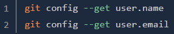

Git is a version control system which is like a save function. Git can be used with github to upload, host and manage code.
To install git on linux (Debian Variant) You first need to make sure linux is updated fully using the following code:
If running linux you would likely have Git installed already, but if not then it can be installed by firstly adding the repository, reupdating the system
and finally using the install command like shown below.
Following the install of the most recent Git version. It is now time to configure Git to talk to Github. Firstly we need to let Github know who the local Git user is
using the below commands.
Then we need to change the default branch for new repositories from 'Master' to 'Main' (Main is the new updated default branch)
Setting the default branch reconciliation behavior to merging is also advised and can be done with:
Finally to test everything is setup and working ok, we can use the following code. It should return our credentials too us that has just been used for the setup proceedure.

A ssh key is a cryptographically secured identifier, Basically a really long password thats used to identify the machine being used.
Github uses this key to allow uploads to your repository without having to type the account username and password each time.
To check to see if a ssh key is installed or not, type the following command into the linux terminal.
If the text 'No such file or directory' appears then you do not have a 'ed25519' ssh key installed currently.
In this case you can proceed on to the install code below. If this message didnt appear then you can proceed to linking the key to Github as its already setup.

Creating a key using the above code will prompt for a location to save it too, Just press enter for the default. It will also ask if you want to add your own passphrase to
keep the key extra secure or just press enter again too bypass. If a passphrase is used then you will need to reenter it again.
Finally i would check to see if working correctly by using the above 'ls ~/.ssh/id_ed25519.pub' command.
Finally the SSHKey needs to be linked to Github so the username and password doesnt need to be entered everytime an upload needs to happen.
Firstly open Github via the web browser and navigate to the profile picture in the top right hand corner and select 'Settings' in the drop down menu.
Next on the other side of the screen click 'SSH and GPG Keys' And click the green box over to the right again saying 'New SSH Key' and name the key something descriptive.
While leaving the previous window open for a while, You now need to copy the SSH Key using the 'cat command' back inside the Linux Terminal
which will read the file directly to the linux terminal ready for us to copy.
If done correctly the result should produce an output in the terminal beginning with 'ssh-ed25519' and end with 'username@hostname'
This is the text that needs to be copied (Using ctrl+C as right clicking doesnt work in the terminal) and pasted to Github's Key field (The larger text box)
The Key type can remain as 'Authentication Key' and once all steps are complete the green 'Add SSH Key' can be clicked to finish adding the key to Github.
One Final step to the SSH Key setup is to test to see if its working using the code below. Its should ask if your sure you want to connect after entering the code. Just type yes!
If a passphrase was used on creation of the key then it will ask for this also. Once confirmed a notification with your username will say its been successfully authenticated.